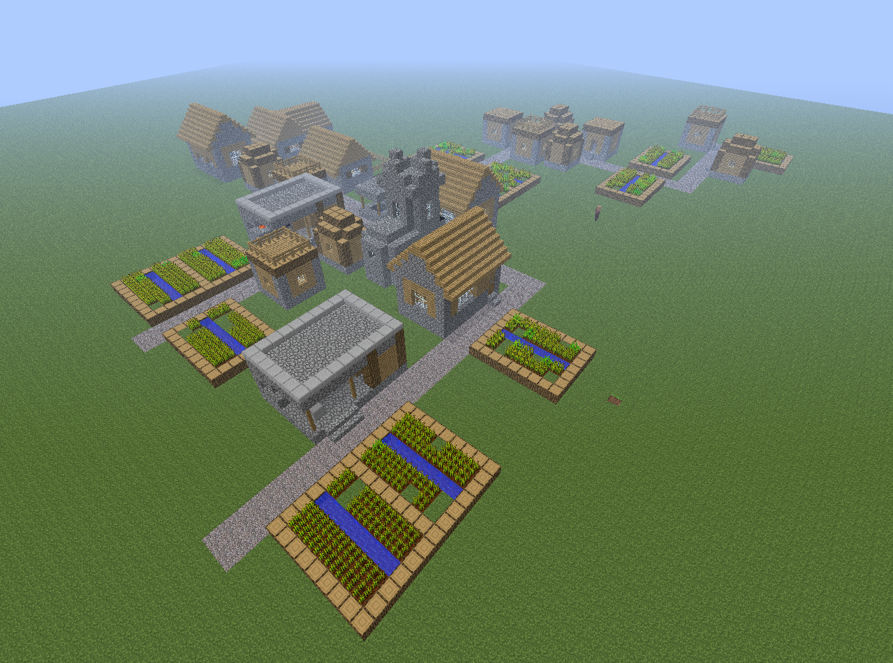

Village

Villages are a type of structure that can only be generated in the overworld. It can be found in six different biomes namely, Plains, Desert, Meadow, Savanna, Snowy Plains, and Taiga. The look of the village also varies depending on the biome it generated in. It is inhabited by villagers which you can trade with. There are also naturally generated iron golems, passive livestock mobs, and cats. Zombie Villagers and Wandering Traders also occasionally spawn here. Raids led by illagers can also happen when a player walks in with the Bad Omen Effect.
Information from https://minecraft.fandom.com/wiki/Village